Costa Blanca · Altea
Property for sale in Altea
Villas with sea views in Altea Hills and Altea la Vella, and homes in the villages just behind the coast. Here are the properties we sell in and around Altea today, with a short guide to the areas and what buying really costs.
- 7villas for sale in Altea
- from €1,295,000for a villa
- about 1 hourto Alicante-Elche airport
- 11 kmto Benidorm
For sale now
Properties for sale in Altea
Villas with 3 to 5 bedrooms, a private pool and views over the sea or the mountains, in Altea Hills, Altea la Vella and the hills around the town. Prices are as listed today; ask us for the current availability.
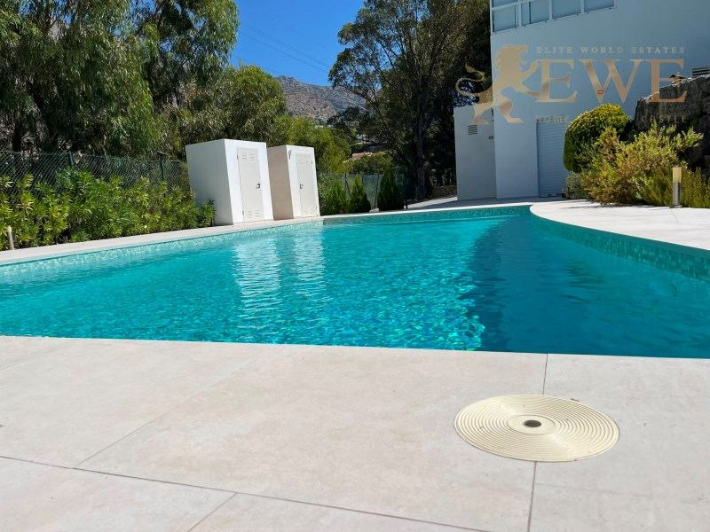
EWE3827Altea
Completely Renovated Villa by the Golf Course in Altea la Vella
€1,295,000
4 bedrooms · 3 bathroomsRef. EWE3827
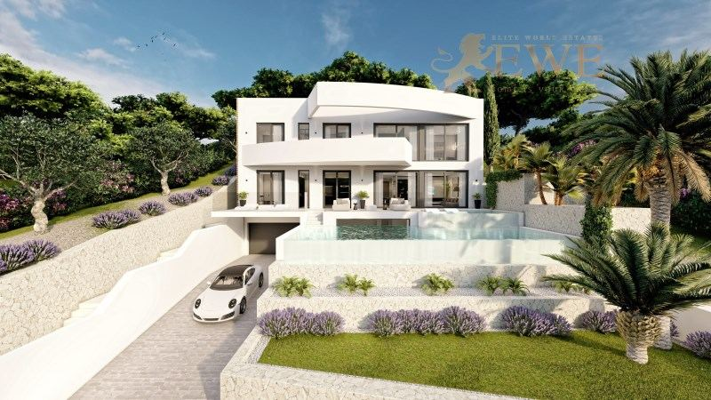
EWE2105Altea
Luxury villa with sea views in Altea
€2,090,000
4 bedrooms · 5 bathrooms · 500 m²Ref. EWE2105
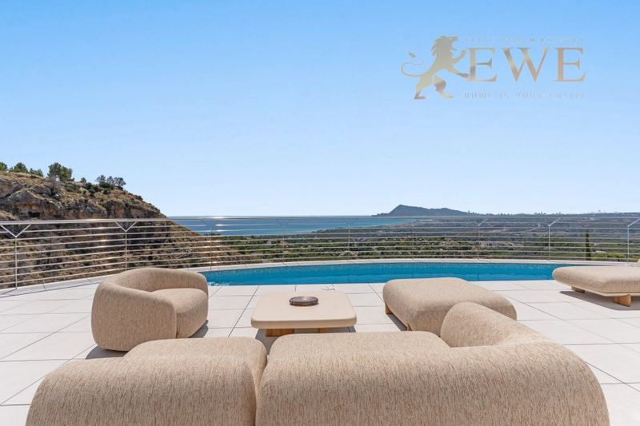
EWE014Altea
Excellent villa with panoramic mountain and sea views in Altea
€2,146,000
4 bedrooms · 5 bathrooms · 405 m²Ref. EWE014
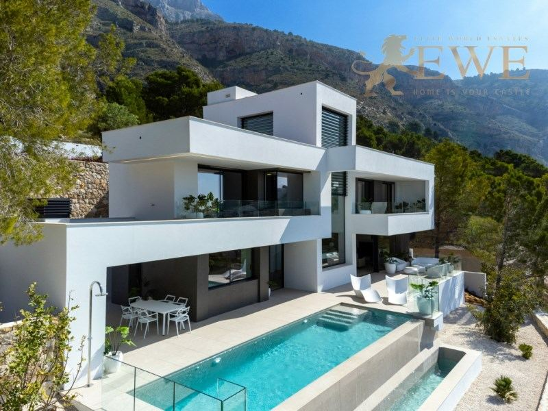
EWE1616Altea
Wonderful villa with spectacular sea views in Altea
€2,200,000
3 bedrooms · 5 bathrooms · 218 m²Ref. EWE1616
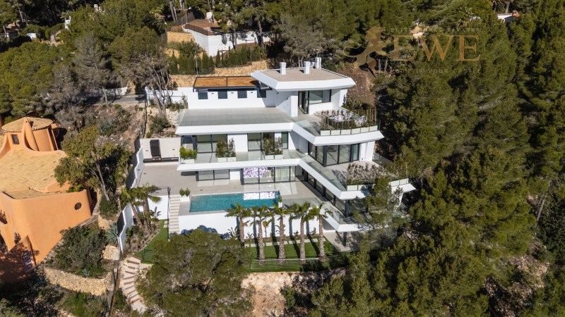
EWE2400Altea
Stunning villa with sea views for sale in Altea
€2,250,000
4 bedrooms · 6 bathrooms · 328.62 m²Ref. EWE2400
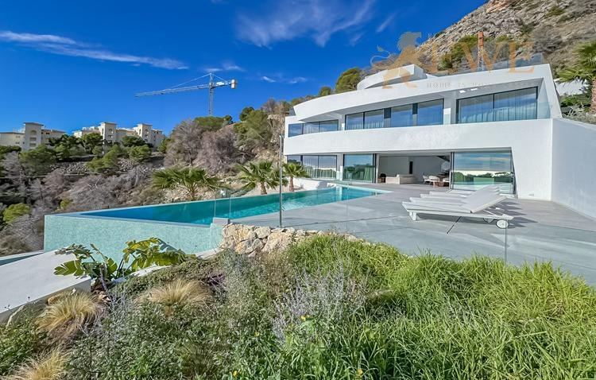
EWE3338Altea
A dream villa with perfect sea views in Altea Hills
€2,370,000
4 bedrooms · 5 bathroomsRef. EWE3338
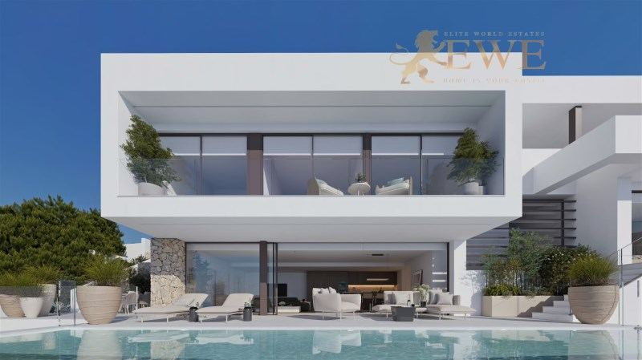
EWE1614Altea
VILLA FOR SALE IN ALTEA WITH SEA VIEWS AND PRIVATE INFINITY POOL
€2,400,000
4 bedrooms · 5 bathrooms · 228 m²Ref. EWE1614
A short drive away
Near Altea: Albir, Polop, La Nucia
Ten to fifteen minutes from Altea: apartments and villas by the beach in Albir, and villas and townhouses with mountain views in Polop and La Nucia, often for less money.
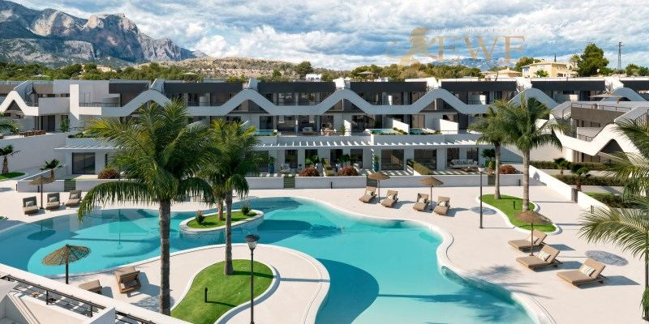
EWE3787Albir
Excellent Sea View Apartments in Alfaz del Pi
€278,000
2 bedrooms · 2 bathrooms · 74.02 m²Ref. EWE3787
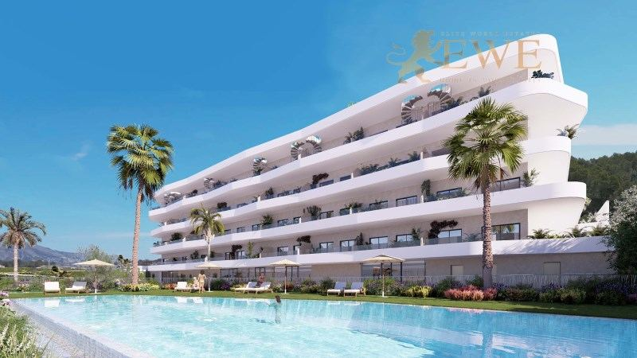
EWE3779La Nucia
Modern Apartments in La Nucía's Prestigious Sports District
€349,388
2 bedrooms · 2 bathrooms · 63 m²Ref. EWE3779
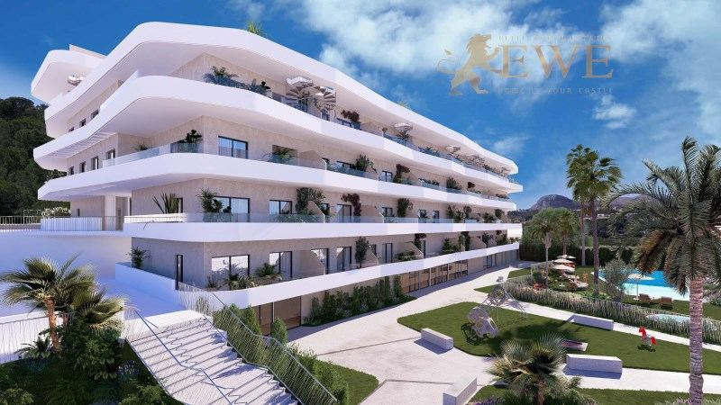
EWE3780La Nucia
Penthouse with an 80 m² Private Solarium and Mountain Views in La Nucía
€449,427
2 bedrooms · 2 bathrooms · 63 m²Ref. EWE3780
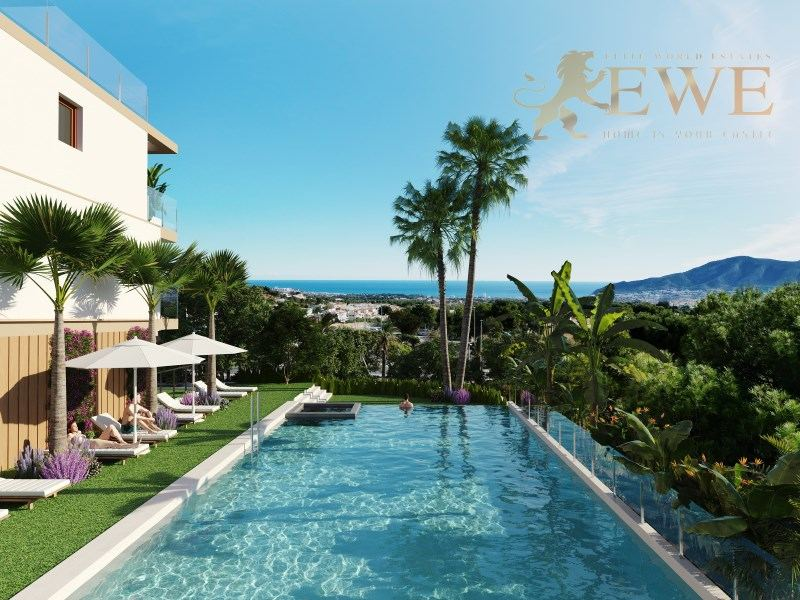
EWE3260La Nucia
Spacious Townhouse with Sea Views for Sale in La Nucía
€465,000
4 bedrooms · 3 bathrooms · 134 m²Ref. EWE3260
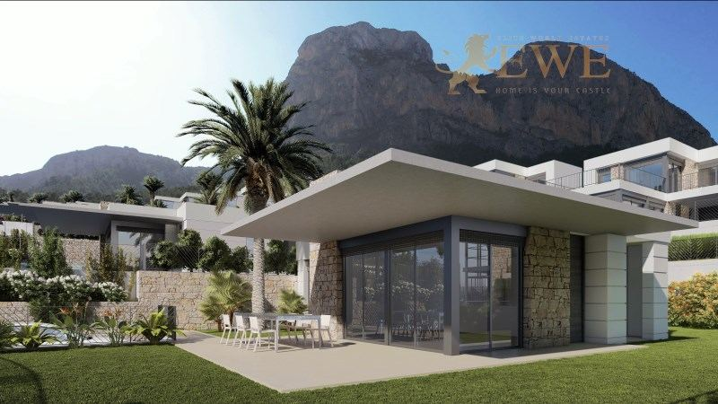
EWE3389Polop
Superb villa with mountain views in picturesque Polop
€470,000
3 bedrooms · 2 bathrooms · 214 m²Ref. EWE3389
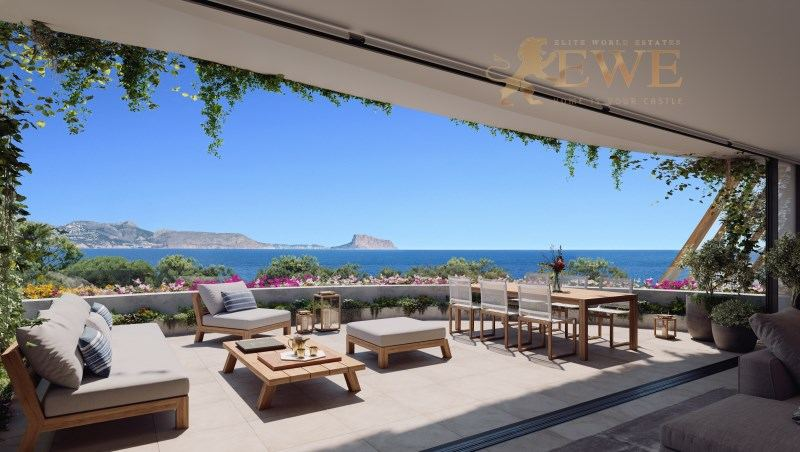
EWE1610Albir
Fantastic apartment overlooking the sea, close to Albir beach
€480,000
2 bedrooms · 2 bathrooms · 64 m²Ref. EWE1610
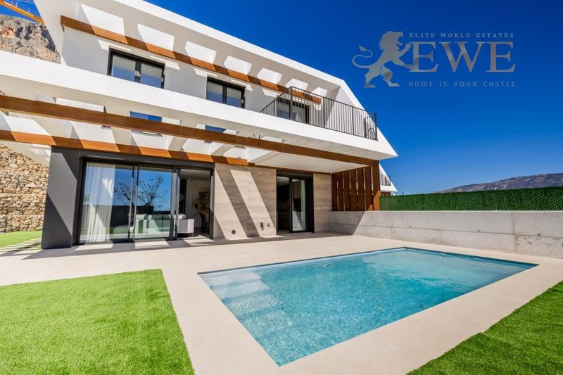
EWE3274Polop
New design of elegant houses with a sea view in Polop
€514,400
3 bedrooms · 2 bathrooms · 90 m²Ref. EWE3274
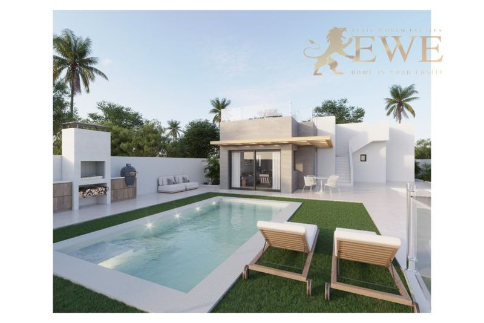
EWE2410Polop
Newly built house with swimming pool in Polop
€585,000
3 bedrooms · 2 bathrooms · 107 m²Ref. EWE2410
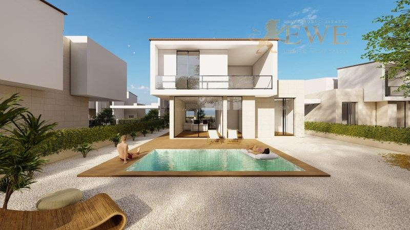
EWE3729La Nucia
Elegant villa with pool in picturesque La Nucía
€585,000
3 bedrooms · 3 bathrooms · 127 m²Ref. EWE3729
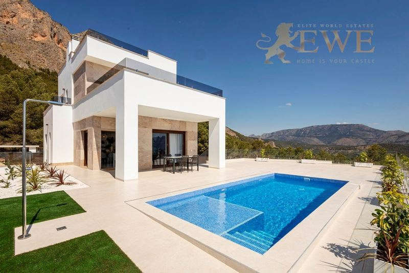
EWE3435Polop
Dream villa with pool in picturesque Polop
€598,000
3 bedrooms · 3 bathrooms · 129 m²Ref. EWE3435
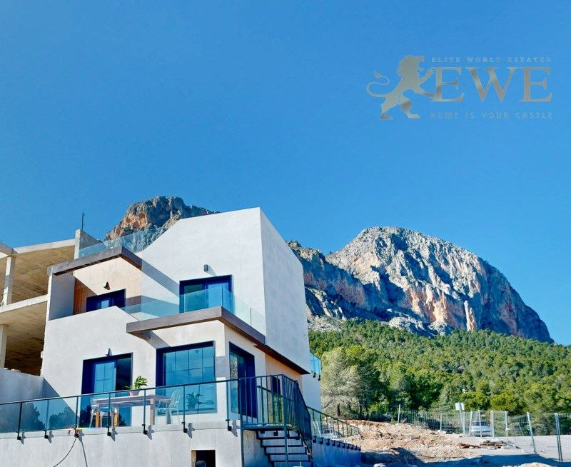
EWE2363Polop
Magnificent terraced house with mountain views in Polop
€598,125
3 bedrooms · 2 bathrooms · 110 m²Ref. EWE2363
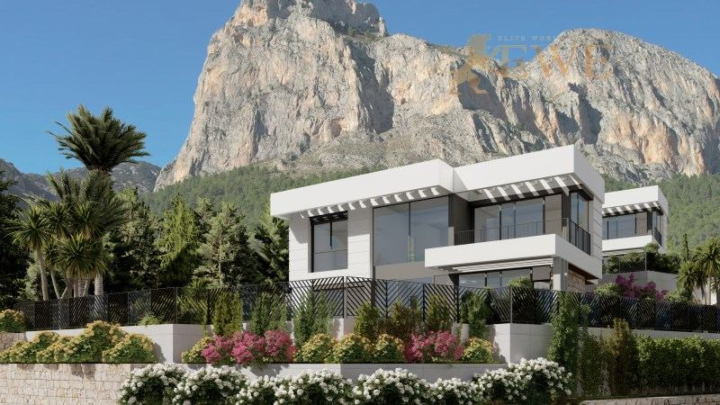
EWE3705Polop
Superb villa with mountain views in picturesque Polop
€607,000
3 bedrooms · 2 bathrooms · 214 m²Ref. EWE3705
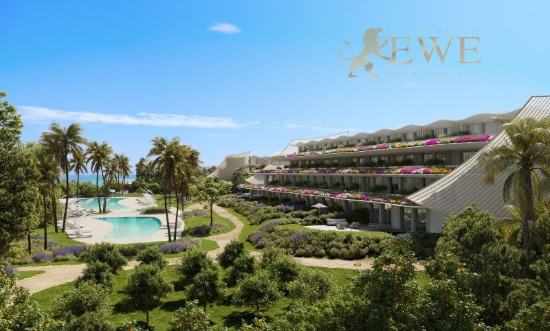
EWE1911Albir
Exclusive apartment 5 min walk to the beach in Albir
€620,000
3 bedrooms · 2 bathrooms · 99 m²Ref. EWE1911
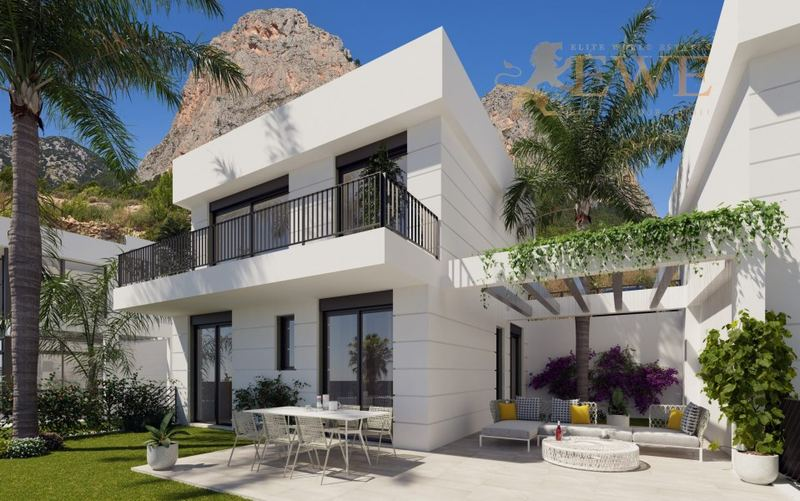
EWE1841Polop
Modern Duplex located at the foot of Mount Ponoing in Polop.
€625,000
3 bedrooms · 2 bathroomsRef. EWE1841
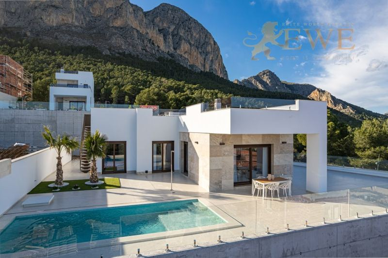
EWE3717Polop
Beautiful villa with sea and mountain views in picturesque Polop
€649,000
3 bedrooms · 3 bathrooms · 129 m²Ref. EWE3717
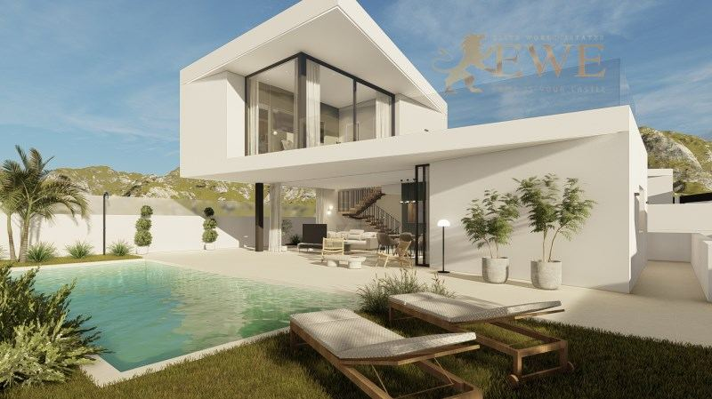
EWE3261Polop
Modern villa with beautiful sea and mountain views in Polop
€755,000
4 bedrooms · 5 bathrooms · 170 m²Ref. EWE3261
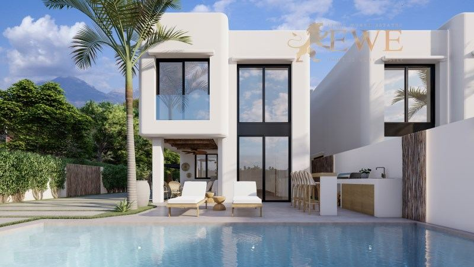
EWE2299Albir
Mediterranean villa in a prestigious location in Albir
€875,000
4 bedrooms · 3 bathrooms · 165.35 m²Ref. EWE2299
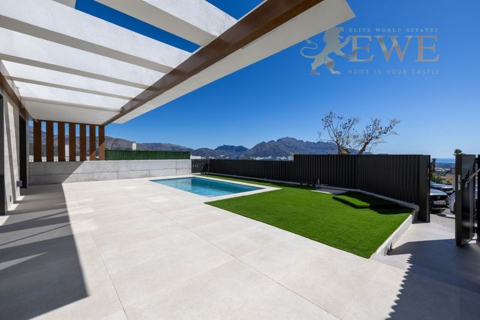
EWE3275Polop
Mediterranean villa with sea and mountain views in Polop
€939,000
4 bedrooms · 4 bathrooms · 150 m²Ref. EWE3275
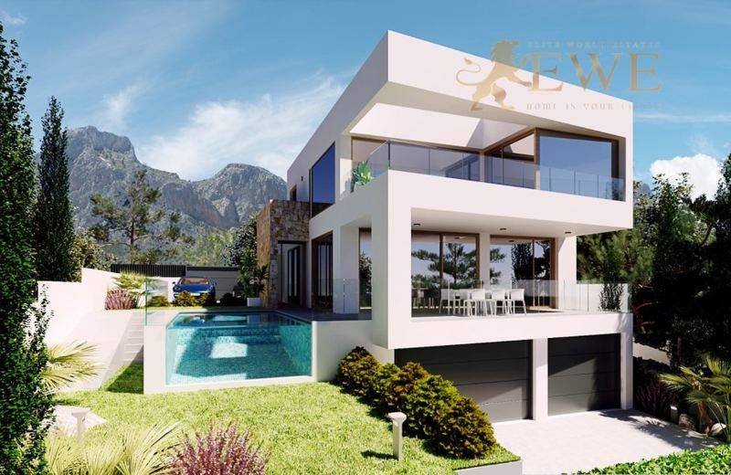
EWE2246Polop
Mediterranean villa with infinity pool and mountain views in Polop
€985,000
3 bedrooms · 3 bathroomsRef. EWE2246
 EWE1724
EWE1724Albir
Unique Penthouse with sea view in Playa del Albir
€1,100,000
3 bedrooms · 2 bathrooms · 117 m²Ref. EWE1724
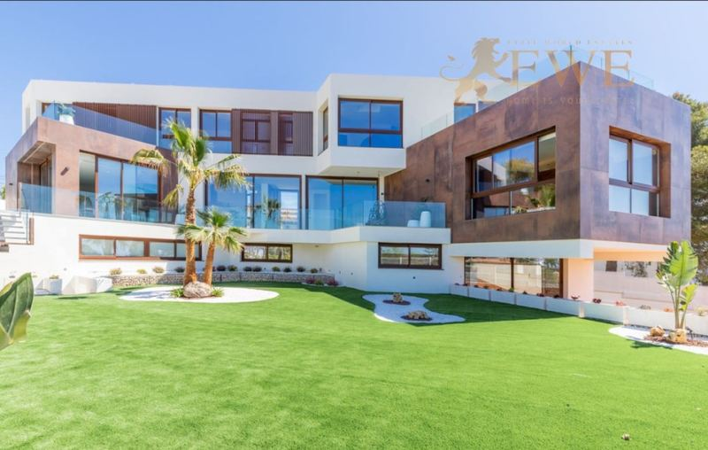
EWE3562La Nucia
Spacious, ready-to-move-in villa with sea views in La Nucia
€2,825,000
4 bedrooms · 5 bathroomsRef. EWE3562
The city
Living in Altea
Altea is a town of about 22,000 people on the northern Costa Blanca, between Benidorm and Calpe. Its white old town stands on a hill above the sea, crowned by the church of Nuestra Señora del Consuelo with its blue and white tiled domes, which you can see from far along the coast.
Most of Altea's beaches are made of smooth pebbles, which keeps the water very clear. Playa de la Roda below the old town has a promenade and cafés, and quieter coves lie to the north. The town has a relaxed, artistic feel, with galleries, small restaurants and a fine arts faculty.
Homes here are mostly villas: in Altea Hills, a gated estate on the slopes above the marina, and around Altea la Vella and its golf course inland. Alicante-Elche airport is about an hour away by car, Benidorm about 11 km and Calpe about 20 km.
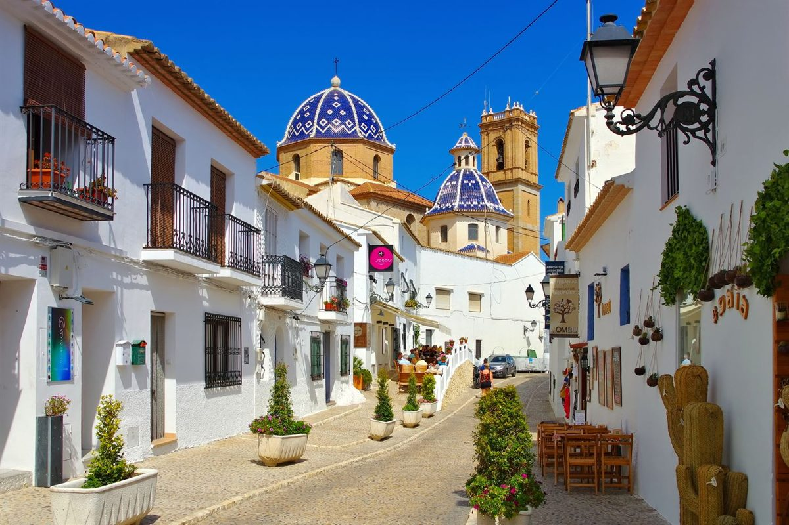
Where to buy
The main areas of Altea
Old town
White houses and narrow streets on the hill around the church, with views over the bay. Small houses, few for sale, and high demand.
Seafront and Playa de la Roda
The promenade and the main beach below the old town, with cafés and restaurants. Apartments close to the sea.
Altea Hills
A gated estate on the hills above the marina, with security and wide sea views. Luxury villas, many with an infinity pool.
Altea la Vella
The old village inland, near the golf course and the mountains. Villas with large gardens, quiet and a few minutes from the coast.
Albir
The neighbouring beach town in L'Alfàs del Pi, between Altea and Benidorm. Apartments and villas near a long promenade.
Polop and La Nucia
Villages at the foot of the mountains, 10 to 15 minutes from the beach. Villas and townhouses with views, often for less money.
Budget
What it costs to buy in Altea
On top of the price you pay tax and fees. For a new villa at €2,090,000, for example, that is €209,000 VAT and €29,260 stamp duty, plus notary, land registry and legal fees. Taxes on resale homes are different, so always ask us for the exact figure for the home you like.
| New build | 10% VAT (IVA) + 1.4% stamp duty (AJD) |
|---|---|
| Resale home | 9% transfer tax (ITP), 11% above €1 million |
| Notary, registry, lawyer | about 1.5–2.5% of the price |
| Every year | IBI property tax and community fees, which depend on the home |
Questions
Buying property in Altea: questions and answers
How much does a villa cost in Altea?
Our villas in Altea start at €1,295,000 today, for a renovated villa by the golf course in Altea la Vella. Most villas with sea views we sell in Altea and Altea Hills cost between €2 million and €2.4 million. In Polop and La Nucia, villas start at about €470,000.
Which area of Altea is best to buy in?
It depends on what you want. Altea Hills is for sea views, security and luxury villas. Altea la Vella is quieter, near the golf course and the mountains. The seafront suits buyers who want an apartment near the beach, and Albir, Polop and La Nucia offer more space for the money.
Are the beaches in Altea sandy?
Most beaches in Altea are made of pebbles, which keeps the water very clear. If you prefer sand, Albir and Benidorm are 10 to 20 minutes away.
How far is Altea from the airport?
Alicante-Elche Miguel Hernández airport is about 60 km away, around an hour by car.
What costs are there on top of the price?
For a new build you pay 10% VAT and 1.4% stamp duty. For a resale home you pay 9% transfer tax (11% above €1 million). Notary, land registry and legal fees add about 1.5–2.5%.
Can foreigners buy property in Altea?
Yes. Anyone can buy property in Spain. You need a Spanish NIE tax number and usually a Spanish bank account, and we help you with both. See our guide to the NIE number.


Looking for a home in Altea?
Tell us your budget and what you need. We reply within one working day, in English, German, Spanish or Polish.